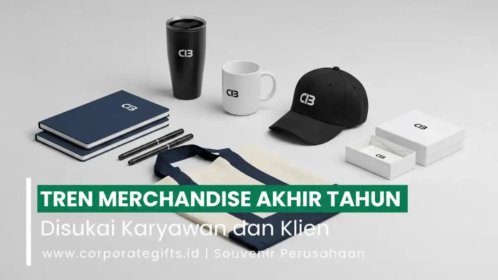

Corporate Gifts ID - Tren merchandise akhir tahun yang paling diminati karyawan dan klien bisnis berpusat pada empat pilar utama: produk teknologi premium, cinderamata ramah lingkungan (eco-friendly), desain estetika minimalis, serta sentuhan personalisasi eksklusif. Keempat kategori ini menjadi primadona karena menggabungkan nilai fungsionalitas harian, prestise visual, dan ikatan emosional mendalam yang membuat penerima merasa sangat dihargai.
Periode penutupan tahun senantiasa menjadi momen berharga bagi korporasi untuk menunjukkan rasa terima kasih dan apresiasi kepada seluruh pemangku kepentingan. Memberikan merchandise perusahaan yang relevan dan bernilai guna tinggi adalah salah satu investasi komunikasi brand paling efektif.
Merchandise bukan lagi sekadar hadiah seremonial tahunan, melainkan instrumen penting dalam memperkuat retensi klien serta membangun kebanggaan internal bagi tim kerja Anda.
Poin Kunci Memilih Merchandise Akhir Tahun:
- Pergeseran Preferensi: Penerima modern lebih memprioritaskan kualitas material premium dan kegunaan nyata dibanding barang promosi massal.
- Integrasi Gaya Hidup: Pilihan gadget fungsional seperti powerbank wireless dan smart tumbler memberikan brand exposure harian yang berkelanjutan.
- Komitmen Keberlanjutan: Penggunaan material alami (bambu, serat daur ulang) mencerminkan nilai korporat yang peduli masa depan bumi.
- Kesan Eksklusif Unboxing: Kemasan rigid hardbox magnetik dengan die-cut foam menciptakan pengalaman pembukaan kado yang mewah.
Evolusi Merchandise Akhir Tahun: Dari Simbol Apresiasi ke Strategi Branding
Beberapa tahun lalu, banyak instansi cenderung membagikan suvenir massal standar seperti kalender dinding atau pulpen plastik biasa. Namun, kini ekspektasi penerima telah berevolusi secara signifikan.
Klien eksekutif dan karyawan milenial maupun Gen Z lebih menghargai produk yang memiliki nilai estetika tinggi, material tahan lama, dan mencerminkan perhatian perusahaan terhadap detail.
Perubahan paradigma ini membuktikan bahwa hampers dan merchandise akhir tahun telah bertransformasi menjadi strategi komunikasi visual yang vital. Hadiah yang dipilih dengan tepat mampu menaikkan kelas brand Anda di atas kompetitor.
4 Pilar Tren Merchandise Akhir Tahun yang Mendominasi
Berikut adalah empat tren produk yang menjadi referensi utama pengadaan corporate gift akhir tahun:

Kombinasi merchandise minimalis modern: tumbler matte, mug keramik, topi bordir, dan notebook hardcover.
1. Merchandise Teknologi Premium
Di tengah tingginya mobilitas profesional modern, perangkat teknologi pintar menjadi pilihan paling bergengsi:
- Power Bank Slim Fast Charging: Menjadi simbol kesiapsiagaan kerja dengan kapasitas daya besar dan bodi aluminium yang elegan.
- Smart LED Tumbler: Tumbler vakum stainless steel SUS 304 dengan indikator suhu sentuh digital pada tutupnya.
- Wireless Charger Desk Stand: Pengisi daya nirkabel multifungsi yang merapikan tata letak meja kerja eksekutif.
2. Merchandise Ramah Lingkungan (Eco-Friendly)
Prinsip keberlanjutan (sustainability) telah menjadi standar etis dalam dunia bisnis global:
- Tote Bag Baby Canvas berbahan katun organik dengan jahitan ganda yang kokoh.
- Tumbler berbahan serat gandum (wheat straw) atau stainless dengan aksen tutup kayu bambu alami.
- Notebook agenda bersampul kraft daur ulang dengan kertas bebas klorin.
3. Merchandise Estetik dan Minimalis
Konsep "Bold Minimalism" mendominasi tren visual modern. Desain produk lebih bersih, memanfaatkan palet warna lembut (earthy tone / monokrom), serta penempatan logo secara proporsional melalui teknik laser engraving atau deboss subtle tanpa elemen dekoratif berlebih.
4. Merchandise dengan Sentuhan Nilai Personal
Personalisasi nama individu pada produk menghadirkan ikatan psikologis yang sangat mendalam:
- Grafir nama karyawan atau klien pada pulpen metal eksklusif dan botol minum.
- Kartu ucapan akhir tahun bercetak pesan personal dari CEO atau jajaran pimpinan.
- Pengemasan khusus dengan pita satin dan segel wax yang menegaskan rasa hormat.
Tabel Matriks Kategori Produk Akhir Tahun, Target Penerima, dan Estimasi Budget
Gunakan matriks perbandingan di bawah ini untuk menyusun rencana anggaran pengadaan cinderamata akhir tahun institusi Anda:
| Kategori Tren | Rekomendasi Set Produk | Metode Kustomisasi | Alokasi Budget Unit | Segmen Penerima |
|---|---|---|---|---|
| Tech Executive | Powerbank Slim 10.000mAh + Smart LED Tumbler + Metal Pen | Laser Engraving Presisi + UV Spot Box | Rp275.000 - Rp450.000 | Klien VIP, Komisaris, Mitra Strategis |
| Eco Wellness | Bamboo Tumbler + Recycled Notebook + Wooden Cutlery Set | Grafir Kayu Alami + Deboss Kraft | Rp150.000 - Rp250.000 | Seluruh Karyawan, Peserta Townhall |
| Minimalist Daily | Tote Bag Kanvas Tebal + Matte Ceramic Mug + Lanyard Kulit | Digital DTF Sablon + Emboss Kulit | Rp110.000 - Rp195.000 | Staff Kantor, Mitra Komunitas |
| Office Desk Set | Desk Mat Kulit PU + Kalender Meja Kayu + Pulpen Rollerball | Foil Emas (Hot Stamping) + Laser | Rp135.000 - Rp225.000 | Manajemen Menengah, Rekanan Kerja |
Panduan Memilih Merchandise Sesuai Tren dan Kebutuhan Perusahaan
Agar pengadaan merchandise akhir tahun berjalan mulus dan tepat sasaran, terapkan empat langkah strategis berikut:
- Segmentasikan Karakter Penerima: Bedakan paket untuk jajaran direksi, klien kunci, dan staf internal guna menyesuaikan tingkat kemewahan produk.
- Pilih Vendor Resmi Berpengalaman: Bekerja sama dengan produsen yang menjamin ketepatan waktu pengiriman, standarisasi Quality Control ketat, dan transparansi faktur pajak B2B.
- Prioritaskan Daya Tahan Kemasan: Hadirkan kemasan rigid hardbox dengan bantalan busa die-cut untuk memastikan produk tetap aman saat dikirim ke luar kota atau luar pulau.
- Rencanakan Timeline Lebih Awal: Memulai proses kurasi dan pemesanan pada awal kuartal keempat (September-Oktober) menghindarkan institusi Anda dari antrean padat produksi akhir tahun.
Pertanyaan Seputar Merchandise Akhir Tahun (FAQ)
Kesimpulan dan Konsultasi Merchandise Akhir Tahun
Merchandise akhir tahun yang dirancang dengan memadukan fungsi praktis, estetika modern, dan sentuhan personal adalah sarana efektif untuk mempererat loyalitas kemitraan bisnis dan memotivasi kinerja tim menyongsong tahun yang baru.
Jelajahi koleksi produk terlengkap di e-katalog resmi kami dan diskusikan konsep merchandise akhir tahun impian perusahaan Anda bersama konsultan ahli di Corporate Gifts ID.